Setting the sun...
Resident Indonesian adult ticket. Valid for the full 28-hectare grounds and all six satellite temples on-site.
Resident Indonesian child ticket for ages five through ten. Younger children enter with family at no charge.
International adult ticket. Includes unrestricted access to the viewing platforms, Majapahit Museum, and Kecak amphitheatre.
International child ticket for ages five through ten. Family photography is welcome; drones require prior approval.
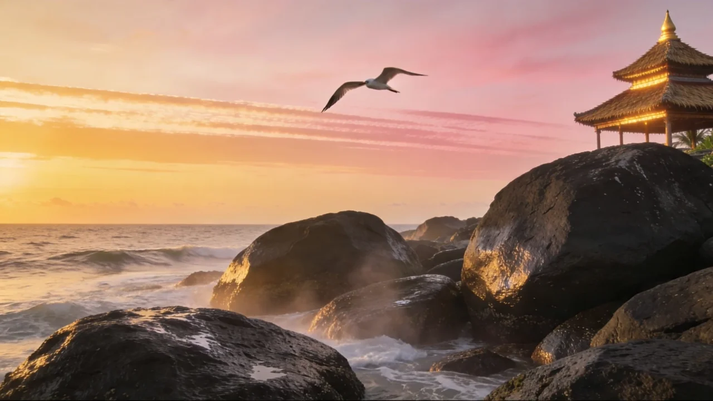
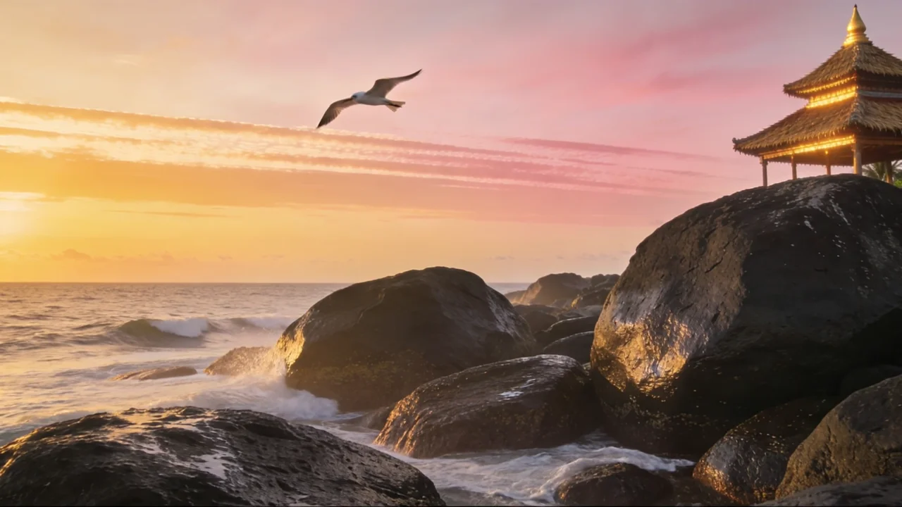
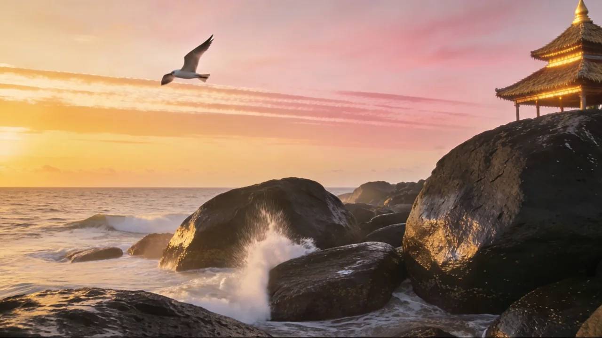
Park inside the 2.77-hectare lot, follow the lane of stalls and incense, and let the sea air guide you toward the cliff. Plan for at least 90 minutes before sunset — the path is long, and every stone has a story.
Pura Luhur Tanah Lot sits on its own island of rock. At high tide, water encircles the base and the temple appears suspended on the sea. At low tide, Balinese priests bless visitors at Tirta Pabersihan — the holy spring that wells from the rock itself.
Fifty men chant cak cak cak in a circle of firelight as the sun sinks behind the horizon. Performed daily. No music, no instruments — only voices, rhythm, and the sea below.
Tap any card for the full story.
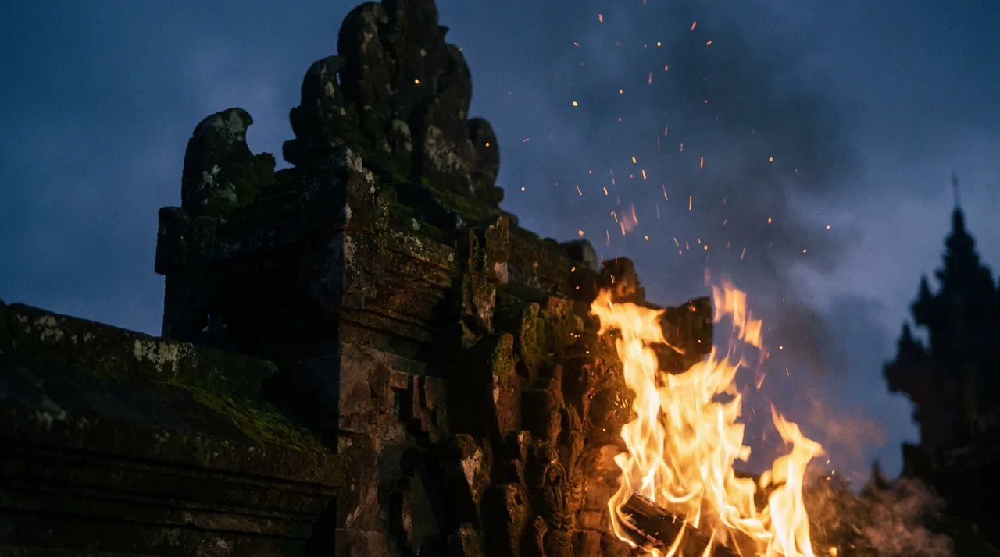
Fifty chanters, a single flame, and the sun on the horizon. Performed every evening at the temple amphitheatre.
Read more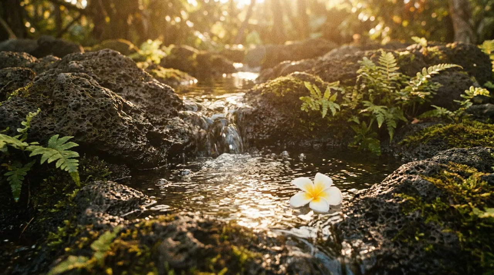
Fresh water that wells up from inside a cave beneath the rock — said to come from the middle of the sea.
Read more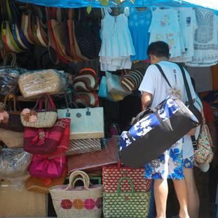
Sacred sea snakes in caves below the temple, said to guard Pura Tanah Lot from the spirits of the south sea.
Read moreCurated viewpoints across the grounds — every angle of the sunset is framed for you.
Read more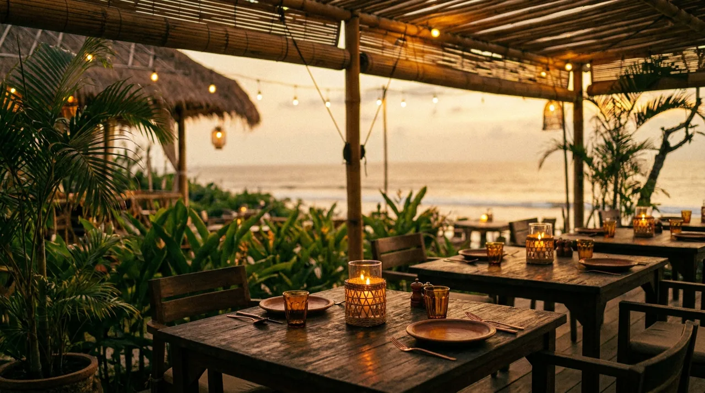
Open-air Balinese dining moments from the entrance. Fresh seafood with a front-row seat to the sunset.
Read moreExhibits on the 16th-century Majapahit court and Dang Hyang Nirartha — whose meditation on this rock became the temple.
Read more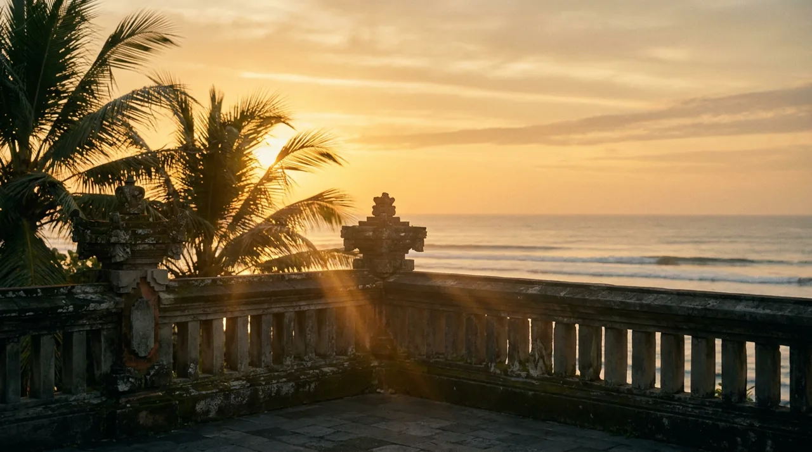
A purpose-built cliffside terrace giving the cleanest frontal view of the temple silhouette as the sun sets into the sea.
Read more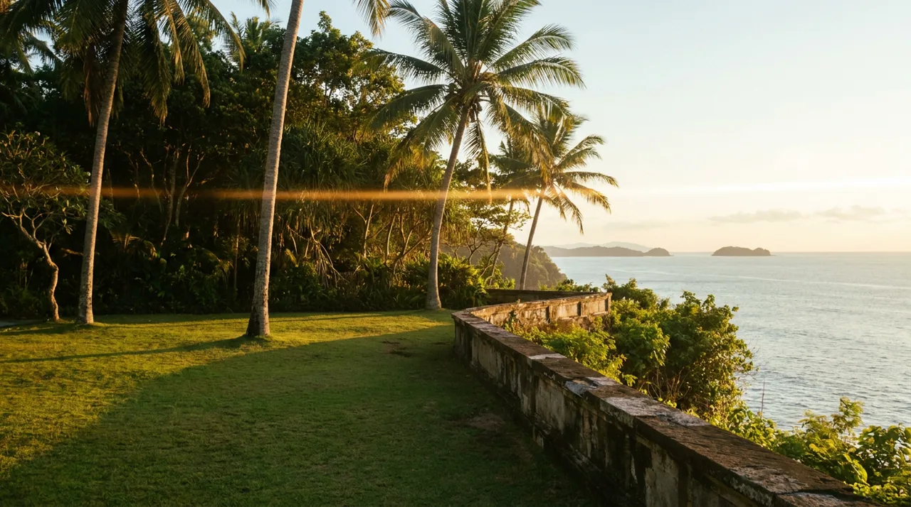
A grassy cliff-edge lawn with panoramic ocean views — popular for weddings, photography, and slow afternoon walks.
Read more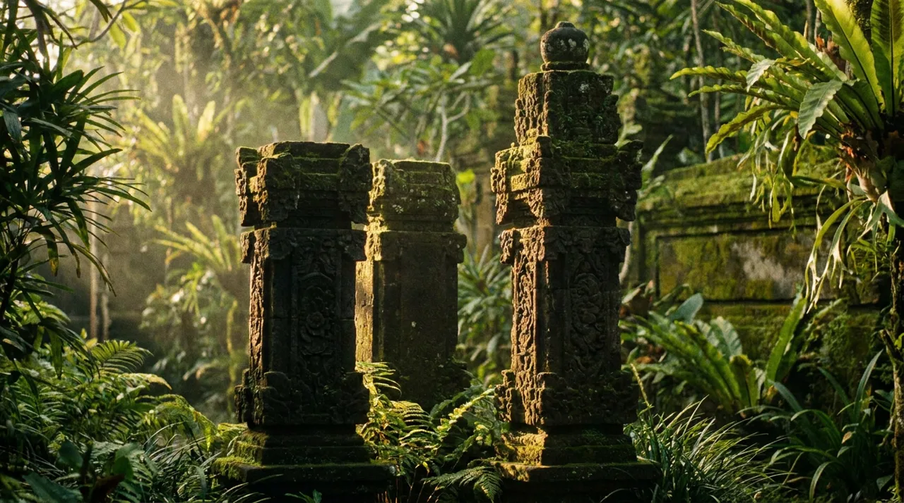
A three-pillar stone memorial honouring local heroes of Bali's history. Carved in the traditional Balinese style.
Read more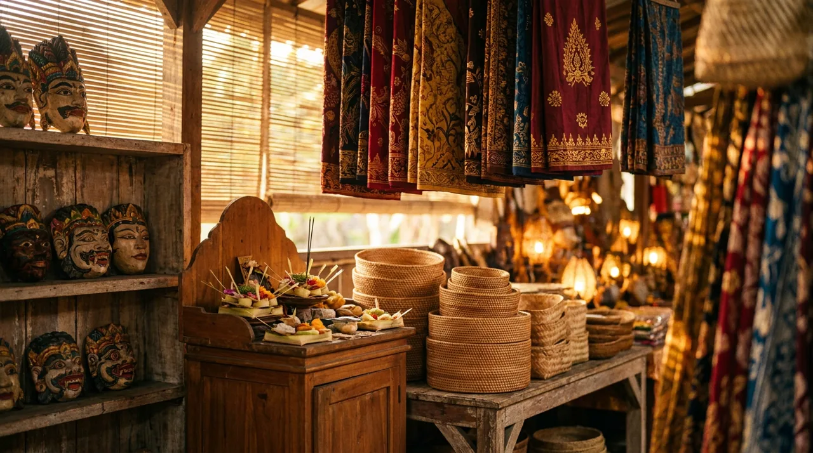
Over a hundred stalls with hand-batik sarongs, carved wooden masks, paintings, jewellery, and small offerings — the longest part of most visits.
Read more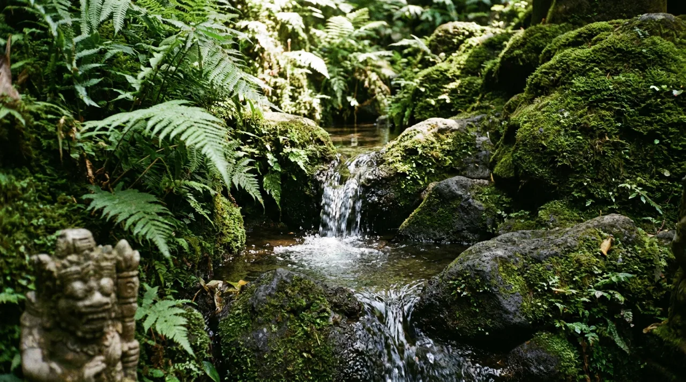
A second holy-water source on the grounds, quieter than Tirta Pabersihan — locals come here for blessings before festivals.
Read moreIn the sixteenth century, the holy priest Dang Hyang Dwi Jendra — known to Bali as Dang Hyang Nirartha — crossed from the Majapahit court in East Java and walked the coast of Bali teaching Dharma Yatra. When he came upon the rocky outcrop at Segara Kidul, he meditated there and ordered a shrine built. Today, Pura Luhur Tanah Lot is one of the seven sea temples that form a spiritual chain around Bali — each in sight of the next, each guarding the island from the south sea.
Nestled amidst the majestic waves of the Indian Ocean, Tanah Lot Temple stands as an iconic emblem of Bali's spiritual and natural allure.— Website resmi DTW Tanah Lot
Open daily 07:00 – 19:00 · Kecak & fire dance at sundown.
From IDR 20,000 for resident children to IDR 75,000 for international visitors.